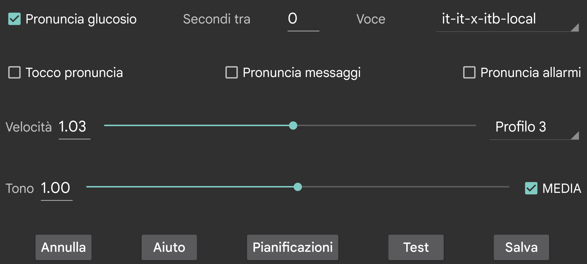

ar be de es fr hi it ja nl pl ru tr uk uz zh en
Pronuncia i valori del glucosio quando arrivano.
Secondi tra: Specifica quanti secondi Juggluco deve attendere prima di pronunciare il valore del glucosio successivo. I valori del glucosio sono sempre pronunciati immediatamente quando arrivano. Quando viene specificato un valore grande, Juggluco salterà i valori del glucosio che arrivano prima che sia trascorso questo periodo di tempo.
Voce: scegli una voce sintetizzata dall'elenco disponibile.
Velocità: un numero più alto significa parlato più veloce.
Tono: un numero più alto significa un tono più alto.
Test: pronuncia l'ultimo valore del glucosio.
Su alcuni telefoni le impostazioni Android per il text-to-speech devono essere modificate affinché funzioni. A volte i dati di una lingua devono essere installati o la configurazione modificata. Sui telefoni Samsung deve essere impostato "Google text-to-speech" invece di "Samsung text-to-speech engine" per poter scegliere tra diverse voci. Queste opzioni possono essere trovate cercando text-to-speech nelle impostazioni Android o andando in Lingua e input (->Avanzate)->Sintesi vocale. Qui puoi selezionare "Speech Services by Google" e installare i dati vocali. Su altri telefoni si trova in Impostazioni di sistema → Accessibilità → Visione → Impostazioni sintesi vocale..
Quando tocco pronuncia è attivato, toccando in determinati punti si attiva la pronuncia:
Toccando il glucosio corrente;
Toccando i punti dei grafici e i punti di scansione;
Toccando i valori;
La data di quel punto del grafico viene pronunciata quando si toccano gli angoli superiori sinistro e destro;
Tenendo premuto a lungo un elemento del menu;
Tenendo premuto a lungo un valore nella lista dei valori (menu centrale sinistro->lista).
Legge i messaggi di testo, temporaneamente visibili sullo schermo, e il risultato della scansione (messaggi di errore e valore del glucosio).
Pronuncia il livello di glucosio durante gli allarmi di glucosio basso e alto. Viene letto sia all'inizio dell'allarme che al momento in cui l'allarme viene fermato.
Seleziona quale profilo è attivo. Default è il profilo predefinito. Tutte le impostazioni in menu sinistro → Impostazione → Allarmi e Pronuncia sono specifiche del profilo attivo.
Puoi configurare Juggluco per attivare un profilo a un certo orario del giorno.
Puoi aumentare o diminuire il volume del suono della pronuncia nelle impostazioni Android sotto la voce suono. Con MEDIA disattivato, il volume è controllato dal cursore Notifiche sul telefono, e dal cursore Sistema su un orologio WearOS. Dovrebbe essere silenziato quando "Non disturbare" è attivo. Quando MEDIA è impostato, viene utilizzata la leva del volume media e sulla maggior parte dei telefoni si sentirà durante "Non disturbare"
Pronuncia allarmi è diverso. Gli allarmi sono pronunciati con la categoria "Allarmi" quando "Allarme è Allarme" è attivato. Sul mio telefono il volume è regolato dalla leva Allarme, sul mio orologio dalla leva Notifiche.